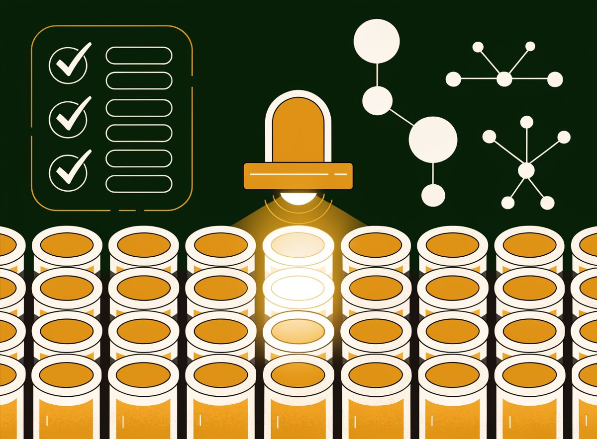

Pfizer
Where GRC means GxP: quality systems, computerized validation, and supply-chain integrity regulated by the FDA and EMA. A compliance culture built on 21 CFR Part 11 and stress-tested at unprecedented speed during COVID.

Overview
In pharmaceuticals, governance is regulated at the level of the batch record, the electronic signature, and the audit trail. Pfizer operates under the most documentation-intensive compliance regime in industry: Good Manufacturing Practice (GMP), Good Clinical Practice (GCP), and Good Laboratory Practice (GLP), collectively GxP, enforced by the FDA, EMA, and dozens of national regulators through unannounced inspections.
The case study's centerpiece is 21 CFR Part 11, the FDA rule that makes electronic records and electronic signatures legally equivalent to paper when controls (audit trails, validation, access control) are in place. It is the closest thing GRC has to a hard engineering standard for compliance systems, and Pfizer runs one of the largest Part 11-governed estates in the world.
Compliance posture at a glance
| Framework | Status | Notes |
|---|---|---|
| 21 CFR Part 11 | Core control | Electronic records/signatures across manufacturing, QC, and clinical systems. |
| GMP / GCP / GLP | Inspected | Continuous FDA/EMA inspection program across plants and studies. |
| ICH Q9 / Q10 | Implemented | Quality risk management and pharmaceutical quality systems, the risk-based backbone. |
| HIPAA | Covered | Clinical-trial PHI handling; BAAs with CROs and sites. |
| GDPR | Covered | Global clinical data; EU trial data governance. |
| DSCSA / serialization | Implemented | US Drug Supply Chain Security Act unit-level traceability. |
| ISO 27001 / NIST | Mapped | Corporate IT security aligned to ISO 27001 and NIST CSF. |
NIST CSF 2.0 maturity assessment
Overall: 4.0 / 5. Governance and quality-management maturity are exceptional; detection and cybersecurity maturity lag relative to pharma's traditional quality focus, a gap the sector is closing quickly.
Key findings
1. Quality risk management is the governance spine
ICH Q9 (quality risk management) and Q10 (quality systems) make risk assessment a regulatory expectation in every process decision, deviation handling, change control, validation scope. Pfizer's quality organization doesn't ask "is this compliant?" so much as "what is the risk, and is it controlled?", the purest risk-based governance model in this portfolio.
2. 21 CFR Part 11 as a living engineering standard
Every system that generates, stores, or signs regulated records must demonstrate validated controls: audit trails that can't be disabled, electronic signatures bound to identity, and documented system validation. This is compliance expressed as engineering requirements, the model GRC should aspire to.
3. COVID-19 stress-tested the model
Pfizer compressed a decade of GMP, supply-chain, and pharmacovigilance work into months to deliver a vaccine at global scale, while FDA and EMA inspected the result. The program held, demonstrating that a mature quality system can accelerate rather than obstruct.
Watch items
Cybersecurity maturity vs. quality maturity
Pharma has been a late adopter of the security mindset that cloud companies take for granted; detection capability is the sector's weakest function. The FDA's cybersecurity guidance for devices and the EU's NIS2 / cyber-resilience obligations are pulling the sector forward, but the gap is real.
Supply chain and third-party GxP
Contract manufacturing (CDMOs), CROs, and raw-material suppliers carry a large share of GMP risk. Serialization (DSCSA) and supplier audits keep the chain visible, but each third party is a potential inspection finding and a potential cybersecurity entry point.
AI in regulated processes
AI is entering drug discovery, quality review, and pharmacovigilance, every use case collides with validation requirements. The industry is still defining how AI systems get qualified under Part 11 and GxP; Pfizer's approach will be a sector reference.
Bottom line
Pfizer is the case study in compliance as a quality discipline. Where tech companies govern risk through certifications and consent decrees, pharma governs through validated systems and inspected processes. Its model proves that the most documentation-heavy GRC regime can also be the most operationally rigorous.
Sources & verification
Every factual claim above was verified against the following public sources (accessed August 2026). Figures updated to the latest fiscal year reported.
Verification note: Revenue verified against SEC XBRL data (Pfizer FY2024 10-K). Regulatory framework claims (21 CFR Part 11, ICH Q9/Q10, DSCSA, EUA) verified against FDA's own regulations, guidance, and press releases. HIPAA applicability to clinical-trial PHI verified against HHS guidance. GMP/GCP/GLP inspection authority is documented in FDA/EMA enforcement frameworks. No internal Pfizer documents were used.